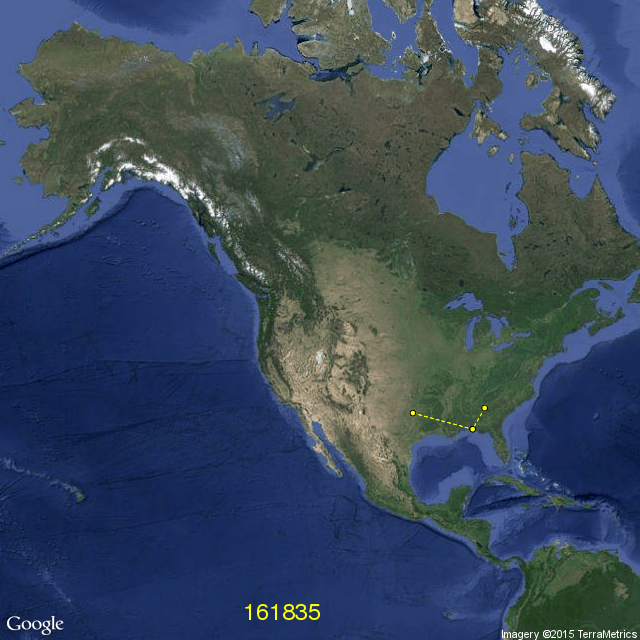

Geographical map of North America with most recently (i.e. during the last
minutes) processed U.S. domestic flights. Yellow points and dashed lines
indicate airports and flights, respectively. The total number of processed
flights is included at the bottom.
The approximate posterior density functions related to the METAR flight
category at departure and arrival airport: marginal visual flight rules,
instrument flight rules and low instrument flight rules versus visual
flight rules.
Regression fits and 95% credible sets for temperature, wind speed and flight
distance. The former two are available for both the departure and arrival
airport.